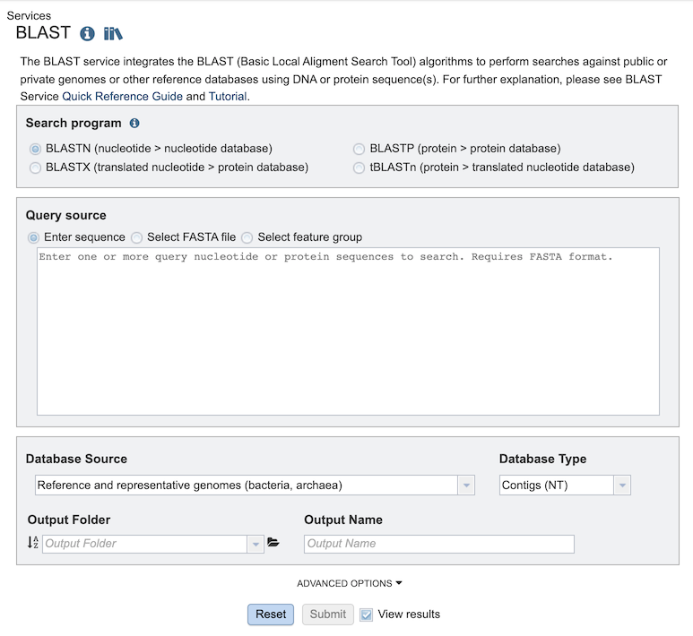
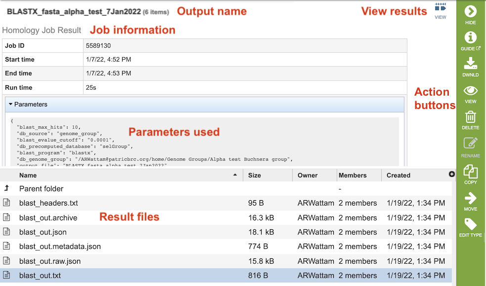
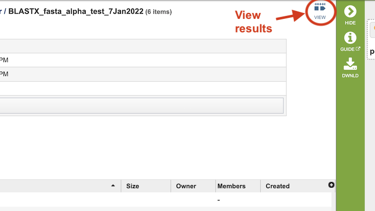
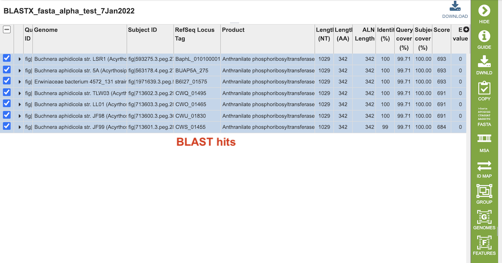
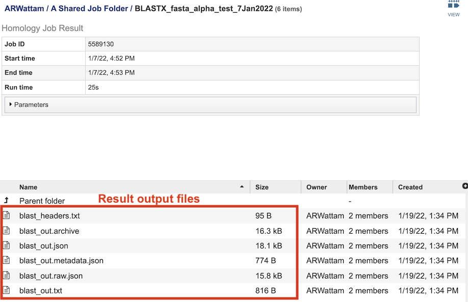

BLAST Service¶
Overview¶
The BLAST service integrates the BLAST (Basic Local Aligment Search Tool) algorithms to perform searches against against public or private genomes in BV-BRC or other reference databases using a DNA or protein sequence and find matching genomes, genes, RNAs, or proteins.
See also¶
Using the BLAST Service¶
The BLAST submenu option under the Services main menu (Genomics category) opens the BLAST input form (shown below). Note: You must be logged into BV-BRC to use this service.

Options¶

Search Program¶
There are four BLAST programs provided by BV-BRC, and each has a specific query sequence and database. Clicking on the button in front of the program name will select it and will also select the appropriate databases.
BLASTN – The query sequence is DNA (nucleotide), and when enabled the program will search against DNA databases of contig or gene sequences.
BLASTX – The query sequence is DNA (nucleotide), and when enabled the program will search against the protein sequence database.
BLASTP – The query sequence is protein (amino acid), and when enabled the program will search against the protein sequence database.
tBLASTn – The query sequence is protein (amino acid), and when enabled the program will search against DNA databases of contig or gene sequences.
Query Source¶
There are three types of Query sources that are provided by BV-BRC:
Enter sequence - Paste the query sequence into the box.
Select FASTA file - Choose FASTA file that has been uploaded to the Workspace.
Select feature group - Choose a feature (gene/protein) that has been saved in the Workspace.
Database Source¶
BV-BRC has different databases to choose from for the source to search wihin:
Reference and representative genomes (bacteria, archaea) - Those designated by the NCBI. This is the default.
Reference and representative genomes (virus) - Those designated by the NCBI.
Selected genome list - Clicking on “Search within genome list” in the drop-down box will open a new source box where desired genomes can be added.
Selected genome group - Genome group saved in the Workspace.
Selected feature group - Feature (gene/protein) group saved in the workspace.
Taxon - Selected taxonomic level from the database.
Selected fasta file - FASTA file that has been uploaded to the Workspace.
Database Type¶
There are three database types:
Genome Sequences (NT) - Genomic sequences from bacterial and viral genomes in BV-BRC, i.e. chromosomes, contigs, plasmids, segments, and partial genomic sequences
Genes (NT) - Gene sequences from bacterial and viral genomes in BV-BRC.
Proteins (AA) - Protein sequences from bacterial and viral genomes in BV-BRC.
Output Folder¶
Folder in the Workspace where you want the BLAST results stored.
Output Name¶
Name you provide to identify the results in the Workspace.
Advanced Options¶
BLAST Parameters include the following:
Max hits - Maximum number of BLAST hits to return.
E-Value threshold - the number of expected hits of similar quality (score) that could be found just by chance.
Output Results¶

The BLAST Service Job Results page (above) contains information about the job and all the files that are produced when the service completes. Information about the job submission can be seen in the table at the top of the results page. Clicking on “Parameters” below the job information table will display all the parameters that were selected when the job was submitted.

Clicking on the “View” icon near the top right of the page (left of the green action bar) will display a results table of the hits (below), from which you can perform more actions via the green Action Bar such as downloading, copying, accessing DNA and protein FASTA format data, constructing an MSA, creating a group of the results, and displaying the associated features and genomes in the database. See definitions of these actions at the bottom of this documentation.

The table at the bottom of the page lists all of the files that were generated by the BLAST run:

blast_headers.txt - column headers in BLAST results table, which include
qseqid: query or source (e.g., gene) sequence id
sseqid: subject or target (e.g., reference genome) sequence id
pident: percentage of identical matches
length: alignment length (sequence overlap)
mismatch: number of mismatches
gapopen: number of gap openings
qstart: start of alignment in query
qend: end of alignment in query
sstart: start of alignment in subject
send: end of alignment in subject
evalue: expect value
bitscore: bit score
blast_out.txt - Entire file generated by BLAST job. Used by BV-BRC to create the blast_out.json file.
blast_out.json - JavaScript Object Notation (JSON) formatted file, which is a standard data interchange format. It is primarily used for transmitting data between the BV-BRC web application and backend servers.
blast_out.metadata.json - JSON-formatted file containing the metadata associated with the BLAST job.
blast_out.raw.json - JSON-formatted file containing list of BLAST identifiers (BLAST uses a different set of identifiers than BV-BRC).
blast_out.txt - Text file containing the BLAST results, including query and target sequences, and the strength of the BLAST hits.
References¶
Altschul, S. F. J. e. BLAST algorithm. (2001).
Boratyn, G.M., Camacho, C., Cooper, P.S., Coulouris, G., Fong, A., Ma, N., Madden, T.L., Matten, W.T., McGinnis, S.D., Merezhuk, Y. et al. (2013) BLAST: a more efficient report with usability improvements. Nucleic acids research, 41, W29-33.
O’Leary, N.A., Wright, M.W., Brister, J.R., Ciufo, S., Haddad, D., McVeigh, R., Rajput, B., Robbertse, B., Smith-White, B., Ako-Adjei, D. et al. (2016) Reference sequence (RefSeq) database at NCBI: current status, taxonomic expansion, and functional annotation. Nucleic acids research, 44, D733-745.